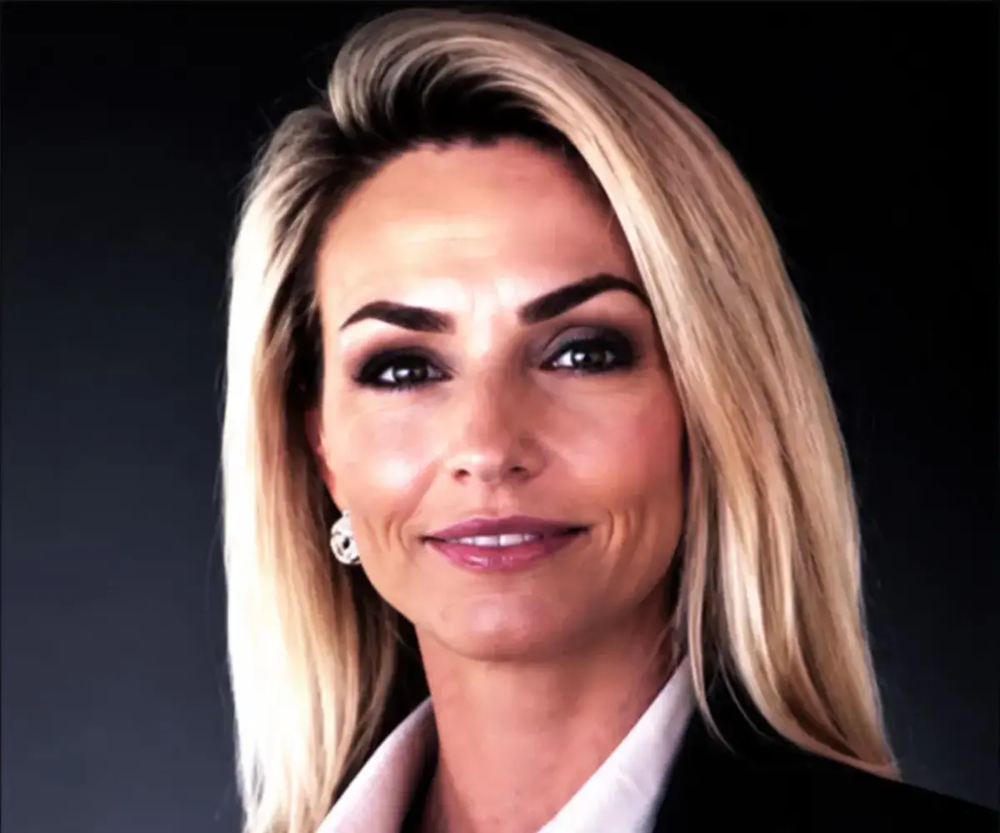
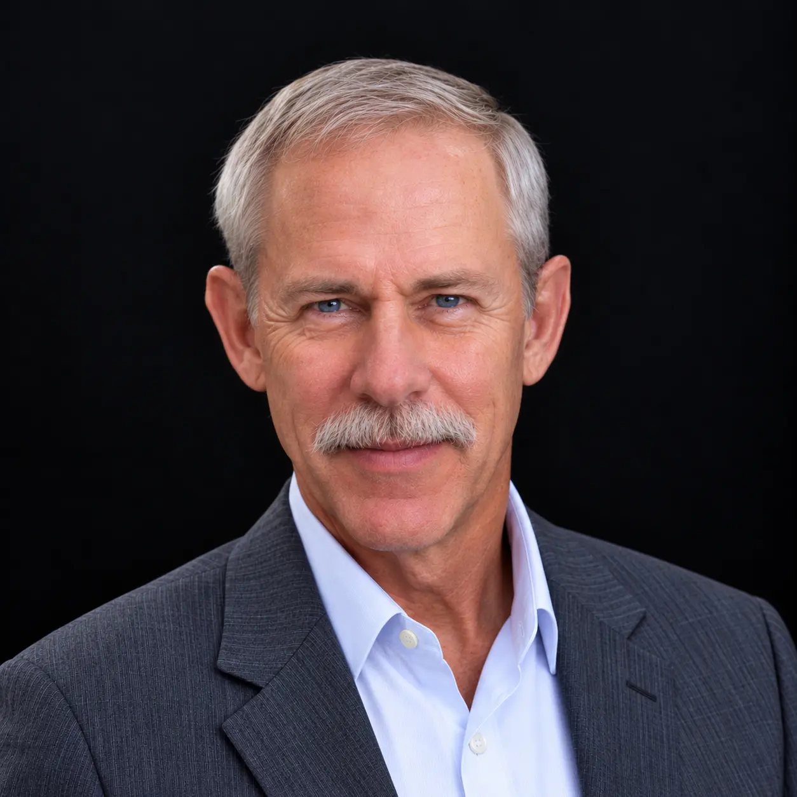
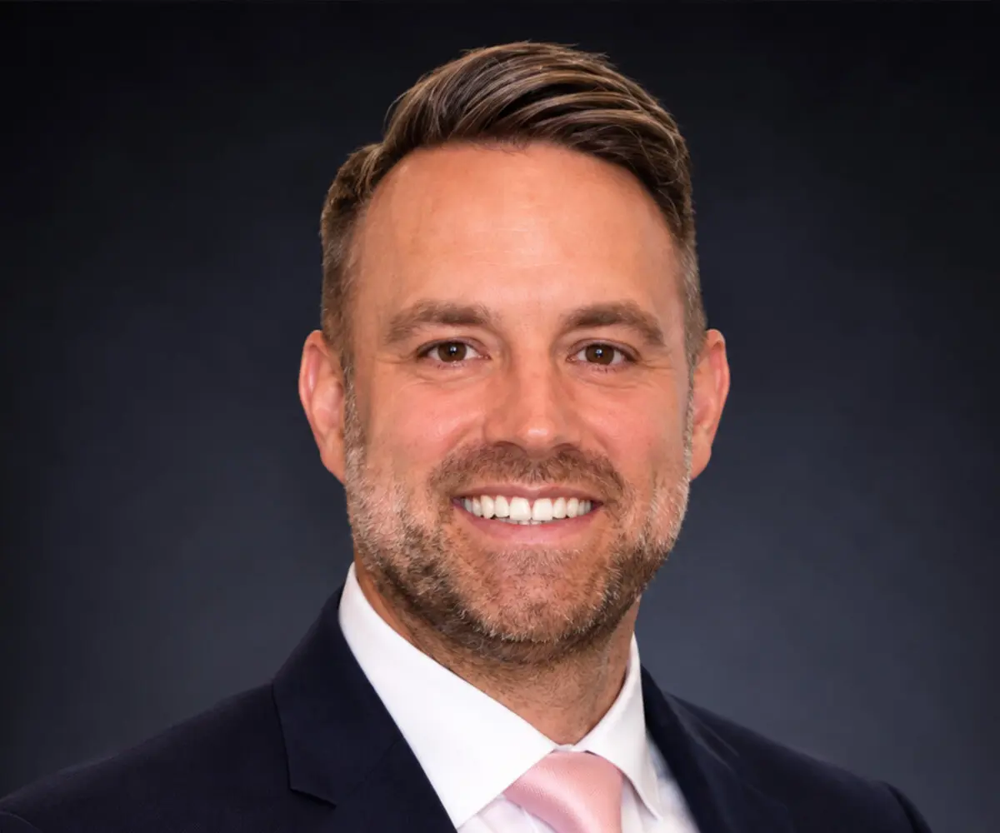

A seasoned team with deep industry, operational experience and a shared commitment to
help companies expand, innovate and succeed in the United States.
Our Leadership
Gus Cardenas
Founder & Chief Executive Officer
Entrepreneur and healthcare leader with extensive experience in strategic planning, organizational development, and building cross-sector relationships. Gus leads USARunway’s vision, growth, and strategic partnerships, drawing on a long-standing network across healthcare, business, government, and the Texas innovation ecosystem.

Monika Sebestova Sirilova, JD, PhD.
Founder & Chief Operating Officer
Attorney and business executive with experience in corporate law, real estate, M&A, operations, and international business development. Monika leads USARunway’s operations and client execution, transforming market-entry objectives into structured strategies, partnerships, and actionable pathways for international companies entering and expanding in the United States.

Ron Farris, Col, USAF (Ret.)
President
Retired USAF senior officer, fighter pilot and wartime commander, NASA aerospace engineer and senior leader. His expertise is evaluating evolving technologies for adaptation to the air and space operational arenas. He has extensive experience in air and space operations and has led large teams executing complex missions internationally. He has served on multiple agency-level advanced X-program reviews. Ron brings disciplined execution, technical expertise, and extensive experience navigating government and mission-driven environments.

Roman Dano
Senior Vice President
International Development
International business executive focused on developing cross-border relationships and connecting European companies with opportunities in the United States. Roman leads USARunway’s international development efforts, supporting company sourcing, strategic partnerships, and the development of relationships that connect international innovation with U.S. markets.